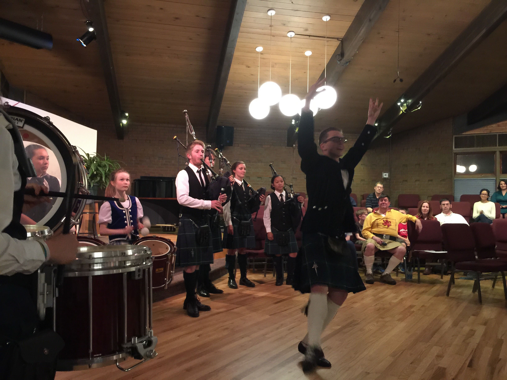
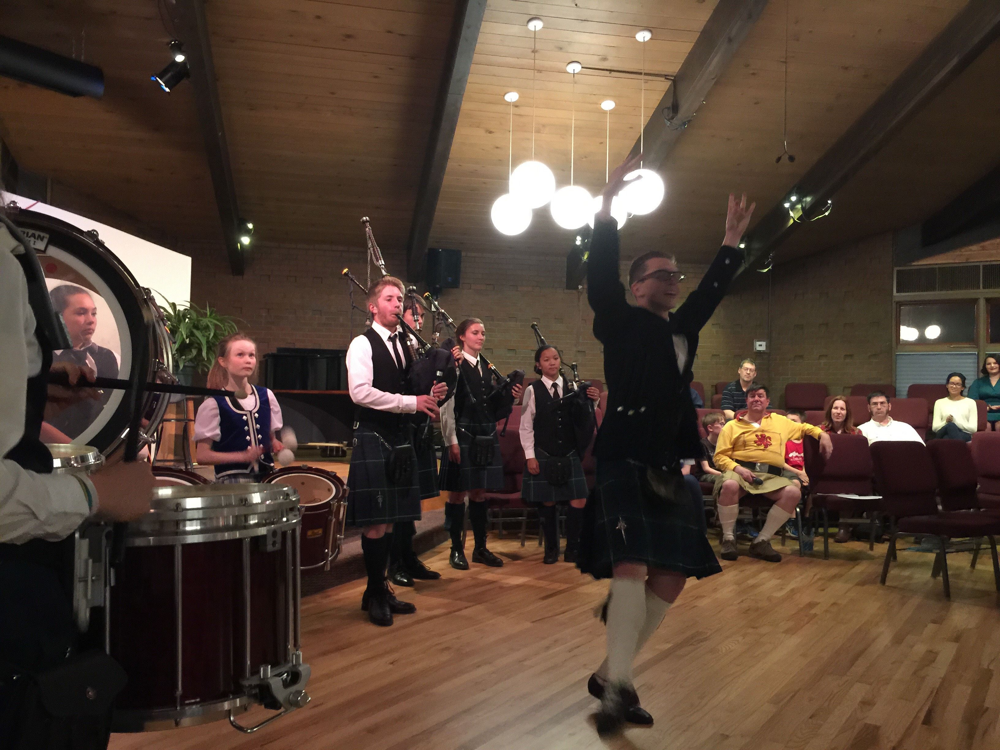

The best known of all bagpipes, the Great Highland Bagpipes of Scotland are what most people think of
when they hear the word "bagpipes". They are played standing up with the pipes resting on the shoulder, and are most
often seen in weddings and funerals, as well as many a Saint Patrick's Day parade.
Most bagpipe performances
are done in standard highland wear, including kilt, vest, socks, and shoes. They can, however, be performed in
whichever dress the client desires.
Favorites on the pipes are Amazing Grace and Scotland the Brave.
 

All rights reserved - Alex Sandridge